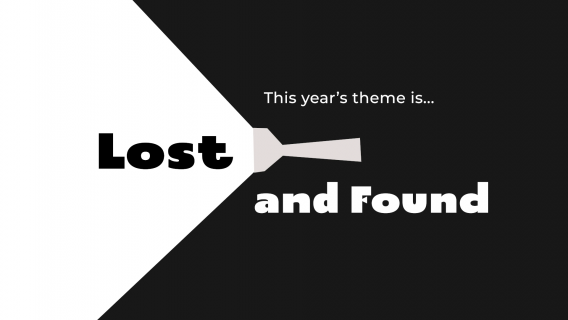

At the start of the event, a theme is announced that serves as a creative constraint for all participating teams. This theme can be quite abstract or open to interpretation, allowing for a wide range of game concepts. This years theme was Lost and Found.

Diversifiers
GGJ Diversifiers are a voluntary set of game jam constraints. Our team believed that deciding on diversifiers would spark innovation during the brainstorm session, as well as, speeding up the design phase of the game jam. Here are the Diversifiers we chose:
Theme Song
The tutorial for your game is in the form of a song.
Wilhelm
The characters in your game can only communicate by screaming (Bonus points if dialogue options give varying degrees of screaming!)
Concept Phase
With the theme unveiled and the diversifiers selected, the moment had arrived to initiate the design phase. Our choice was to develop a spirited couch multiplayer game that drew inspiration from both Mario Party and competitive arena games. The requirement for accommodating four players was a decisive factor driving our character design process. We aimed for character designs that balanced expediency with distinctive individuality. While creating a maze game would have been too predictable, considering the game jam's theme, we instead conceived a scenario where the player's voice had vanished, and its recovery involved the consumption of fruit or visits to the watering hole.
During the development of DinoRoar, my role encompassed the design and development of the character and its associated mechanics. This encompassed the movement, attack, and dashing systems. Beyond gameplay programming, I took charge of crafting the UI character select screen, which proved to be more intricate than initially anticipated. Lastly, I successfully implemented controller support for all four players, surmounting several obstacles tied to the default Unity input system along the way.
We chose the Theme Song diversifier for the game jam, which tasked our team with crafting the game's tutorial in the style of a song. The entire team embraced this challenge enthusiastically, and we were fortunate to have Steph Nguyen, our composer and sound designer, who displayed exceptional skill. Steph spearheaded the creation of the beat and a major portion of the lyrics. Other team members also chipped in to finalize the lyrics and record audio segments. In fact, you can hear me at the song's opening and conclusion. This endeavor proved to be an incredibly positive and enriching experience, infusing DinoRoar with added character and charm. Check it out!
As the 48 hour deadline loomed, the asset pipeline became harder to keep up with. Additionally, not everyone on the art team was able to commit to the entire 48 hours. Leaving many polishing art elements on the cutting room floor.
Controller Support
DinoRoar is a 4-player multiplayer game that requires controller support for each player. Unfortunately, we did not upgrade to Unitys new input system before hand. Leading to lost time as we dealt with resolving controller support issues.
What Went Right
Diversifiers
By far the best use of diversifiers in a game jam that I have experienced to date. The Tutorial Rap is genuinely amazing and having the entire team send in audio records of themselves yelling was a highlight of the weekend!
Remote Teamwork
This was the first time I have participated in a game jam where the majority of the team was remote and across different time zones. We handled it surprisingly well! Specific check-in times were set and communication was thriving the entire weekend.